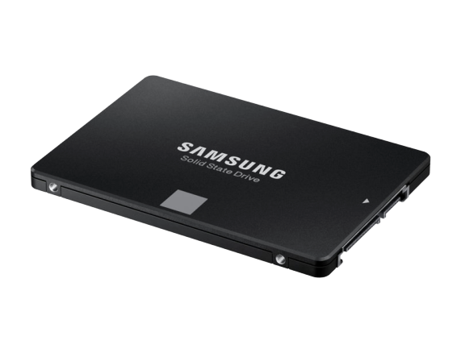
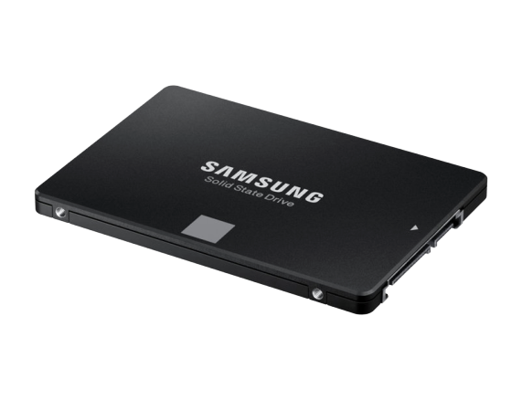

Hier ein paar nette Zitate:
"Ich arbeite an einem (freien) Betriebssystem (nur in meiner Freizeit, es wird nicht so groß und professionell wie GNU) für 386-kompatible PCs."
frühes Posting im Usenet, Zitat von Linus Torvalds, Gründer von Linux!
"Zwei Dinge sind unendlich, das Universum und die menschliche Dummheit, aber bei dem Universum bin ich mir noch nicht ganz sicher." Albert Einstein
| Preis: | Link: | Geeignet für: | Verbesserungen gegenüber nächstgünstigerer Konfiguration: |
| 500€ | Liste | FHD mittel-hoch | mehr Arbeitsspeicher, stärkere 6 Kern CPU |
| 600€ | Liste | FHD hoch-max | stärkere GPU, größere SSD, besseres Netzteil |
| 700€ | Liste | FHD ultra-max | effzientere u. stärkere GPU, leiser CPU-Kühler, mehr Speicher | 800€ | Liste | FHD max/WQHD hoch | stärkere GPU, leiser CPU-Kühler, mehr Speicher |
| 900€ | Liste | WQHD hoch-max | stärkere GPU, stärkere CPU |
| 1000€ | Liste | WQHD hoch-max | ATX Gehäuse m. Glasfenster, leiser CPU-Kühler, etwas größere SSD |